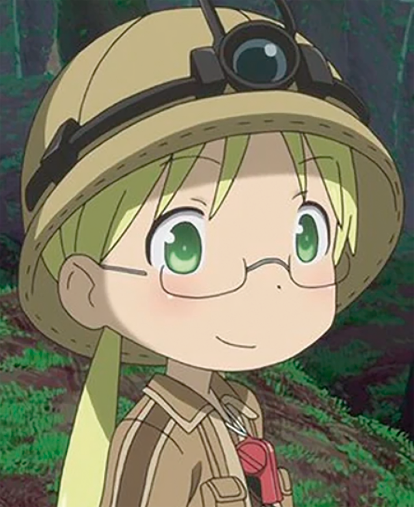

Personajes
Made In Abyss
Personajes Principales

Riko
Hija de la legendaria Silbato Blanco Lyza, Riko es una niña valiente y determinada que sueña con descender hasta el fondo del Abismo para reencontrarse con su madre.
Reg
Un misterioso niño-robot con brazos extensibles y un poderoso "cañón incinerador". No recuerda su origen, pero su resistencia a las maldiciones lo hace clave para la exploración.
Nanachi
Una criatura humanoide con vasto conocimiento sobre el Abismo y sus efectos. Su cuerpo fue alterado tras un experimento inhumano, pero conserva una mente lúcida y empática.
Mitty
Amiga inseparable de Nanachi, Mitty fue transformada en una criatura inmortal tras un experimento en el Nivel 5. A pesar de su apariencia monstruosa, mantiene emociones y un fuerte lazo con Nanachi.